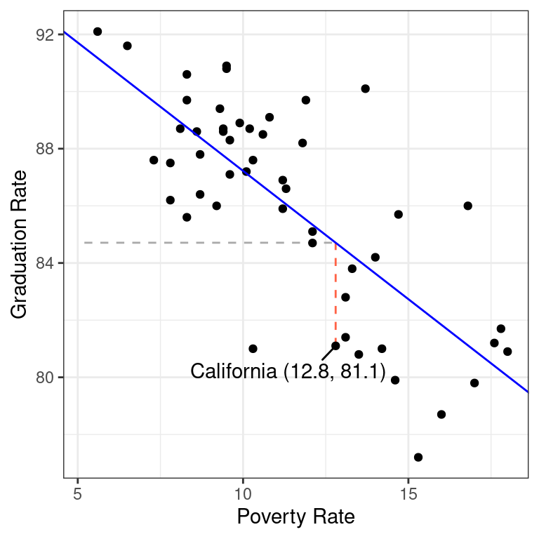

Summarizing Numerical Associations
Correllation and the least squares line
Which of the following plots do you think depicts the relationship between the high school graduation rate and the poverty rate among the 50 US states?
If you guessed the plot on the left, you are correct üéâ.
States with higher poverty rates tend to have lower graduation rates. This is a prime example of two variables that are associated. In a previous set of notes we defined association between two categorical variables, but lets replace that with a more general definition that can apply here.
- Association
- There is an association between two variables if the conditional distribution of one varies as you move across values of the other.
You can detect associations in scatter plots by scanning from left to right along the x-axis and determining whether or not the conditional distribution of the y-variable is changing or not. In the figure to the left below, when you look first to the states with low poverty rates (in the blue box), you find that the conditional distribution of the graduation rate (represented by the blue density curve along the right side of the scatter plot) is high: most of those states have graduation rates between 85% and 90%. When you scan to the right in that scatter plot, and condition on having a high poverty rate (the states in the red box), the conditional distribution shifts downwards. Those states have graduations rates in the low 80%s.
These density curves are conditional distributions because we’ve set a condition on the data we’re visualizing. When focusing on the data that’s in the blue box, for example, we’ve in effect set up a filter where Poverty < 9.
The plot on the right, by contrast, exhibits no association between poverty rate and graduation rate. When we compare the low poverty states with the high poverty states, their conditional distributions of Graduation rate are essentially the same.
So we can use the simple scatter plot to determine whether or not two numerical variables are associated, but sometimes a graphic isn’t enough. In these notes we’ll move from graphical summaries to numerical summaries and construct two different approaches to capturing these associations in numbers: the correlation coefficient and the simple linear model.
The Correlation Coefficient
Let’s set out to engineer our first numerical summary in the same manner that we have previously, by laying out the properties that we’d like our summary to have.
Please watch the following 12 minute video.
- Correlation coefficient, \(r\)
- The correlation coefficient, \(r\), between two variables \(x\) and \(y\) is \[r = \frac{1}{n-1}\sum_{i=1}^n \left( \frac{x_i - \bar{x}}{s_x} \right) \left( \frac{y_i - \bar{y}}{s_y} \right)\]
Several different statistics have been proposed for measuring association. This is the most common and is more specifically called the Pearson correlation.
Example: Poverty and Graduation rate
The data frame used to create the scatter plot above on the left looks like this.
select(poverty, Graduates, Poverty)# A tibble: 51 × 2
Graduates Poverty
<dbl> <dbl>
1 79.9 14.6
2 90.6 8.3
3 83.8 13.3
4 80.9 18
5 81.1 12.8
6 88.7 9.4
7 87.5 7.8
8 88.7 8.1
9 86 16.8
10 84.7 12.1
# ℹ 41 more rowsSince it is a data frame, we can use the summarize() function to calculate our summary statistic.
poverty |>
summarize(r = cor(Poverty, Graduates))# A tibble: 1 × 1
r
<dbl>
1 -0.747The value of -0.747 tells us that the linear association between these variables is negative and reasonably strong. This is our first example of a bivariate summary statistic: there are two variables that we put inside the cor() function to compute our statistic.
Let’s repeat this calculation for the data frame that created the shapeless scatter plot with no association, poverty_shuffled.
poverty_shuffled |>
summarize(r = cor(Poverty, Graduates))# A tibble: 1 × 1
r
<dbl>
1 -0.0546As expected, that scatter plot yields a correlation coefficient very close to zero because the points are scattered across all four quadrants of the plot.
The Simple Linear Model
Another approach to summarizing the linear association is to just … draw a line.
This line serves both as a graphical summary and also as a numerical summary. After all, every line that you draw on a scatter plot is defined by two numbers: the slope and the y-intercept. This line is called a simple linear model.
- Simple Linear Model
- An expression for a possible value of the \(y\) variable, \(\hat{y}\), as a linear function of the \(x\) variable with slope \(b_1\) and y-intercept \(b_0\). \[\hat{y} = b_0 + b_1x\]
Therefore, a simple linear model captures the linear relationship of two variables in not one but two summary statistics, \(b_0\) and \(b_1\).
For the line above, we can do our best to eye-ball these. The line appears to rise -2 percentage points for every 2.5 that it runs, so I’d estimate the slope to be about \(-2/2.5 = -0.8\). If I were to draw the line all the way to the left until it crossed the y-axis at a poverty rate of 0, its y-intercept would be around 95. So I could express the line that is drawn above as:
\[\hat{y} = 95 - 0.8 x\]
The Least Squares Line
If that felt a little shifty to you - drawing a line by hand and then eyeballing its slope and intercept - we can be more precise by using a more precisely-defined type of linear model: the least squares line. This is a method that we’ll study in depth when we get to the unit on prediction, but for now, we’ll use it because it makes calculation very easy. You can find the slope and intercept of the least squares line using statistics that we’re already familiar with: \(\bar{x}, \bar{y}, s_x, x_y\), and \(r\).
- Least Squares Slope
- \[ b_1 = r \frac{s_y}{s_x} \]
- Least Squares Intercept
- \[ b_0 = \bar{y} - b_1 \bar{x}\]
So how does this line look compared to the hand-drawn line? Let’s calculate the slope and intercept and add the resulting line to our scatter plot.
That works remarkably well!
The function that was used to calculate the least squares slope and intercept is lm().
lm(Graduates ~ Poverty, data = poverty)
Call:
lm(formula = Graduates ~ Poverty, data = poverty)
Coefficients:
(Intercept) Poverty
96.2022 -0.8979 The syntax for lm() uses what’s called “formula notation” in R. The first argument is a formula of the form y ~ x and can be read as, “Explain the y as a function of the x”. In the second argument, you specify which data frame contains the variables used in the formula.
So if the correlation coefficient measures the strength of the linear relationship between two variables, what exactly are the slope and intercept measuring? The slope captures the expected change in the \(y\) associated with the \(x\) changing by 1 unit. In this example, states that are separated by 1 percentage point in their poverty rate tend to be separated by about -.89 in their graduation rate. This is distinct from what the correlation tells us because while \(r\) will stay the same regardless of the units in which the data is measured, \(b_1\) is expressly designed to tell us how those units of measurement relate to one another.
What about the intercept? It tells us the value that we’d expect the \(y\) to take when the \(x\) takes a value of zero. Sometimes that’s an informative statistic, sometime it is not. In this setting, do you really expect the graduation rate to be around 96% when their poverty rate is zero? What would it even look like for a state to have a poverty rate of zero? The abstraction of the linear model allows us to ponder such a world, but the reality of economics in the US is that we would never actually observe poverty rates of zero.
So what good is the intercept? Well, it’s useful in helping us calculate a residual.
Residuals
One of the benefits of explaining the association between two variables with a line instead of just the correlation coefficient is that it allows us to calculate what we would expect an observation’s y-value to be based on its x value, so that we can see how far our expectation is from reality. That gap between expectation and reality is called a residual.
- Residual (\(\hat{e}_i\))
- The difference between the observed value of a data point, \(y_i\), and the value that we would expect according to a linear model, \(\hat{y}_i\). \[ \hat{e}_i = y_i - \hat{y}_i \]
\(\hat{y}_i\) is said “y hat sub i” and is also called the “fitted value”.
Let’s calculate the residual for California. Here is that row in the data set.
poverty |>
filter(State == "California") |>
select(State, Graduates, Poverty)# A tibble: 1 × 3
State Graduates Poverty
<chr> <dbl> <dbl>
1 California 81.1 12.8This shows us that for California, \(y = 81.1\), so the next step is to find where the line passes through California’s x-value, \(x = 12.8\). There are several ways to do that calculation, including using R like a calculator and simply plugging that value into the equation for the line show above.
y_hat <- 96.2022 - 0.8979 * 12.8
y_hat[1] 84.70908With that in hand, we can calculate California’s residual.
81.1 - y_hat[1] -3.60908This residual tells us that California is actually a bit of an underachiever. Among states with a poverty rate around 12.8, we would expect their graduate rate to be around 84.7. California’s rate, however, is 81.1, a decrease of 3.6.
The calculation of the residual can be seen in the plot below.

The horizontal dashed line represents \(\hat{y} = 84.7\), the y-value of the least squares line when it passes through \(x = 12.8\). The vertical red dashed line is the residual: the distance between the line and the observation in the y direction.
Residuals open up a new avenue for numerical statistics. While the slope and intercept are two statistics that tell us about the overall linear relationship between the two variables, each residual is a statistic that tells us whether an individual observation’s y-value is higher or lower than we’d expect based on its x-value.
If you have \(n\) data points, you can calculate \(n\) residuals.
Summary
In these notes we considered the question of how to capture the association between two variables with visualizations and numerical summary statistics. The correlation coefficient is one of the most common: it captures the strength and direction of the linear trend. This statistic can be used, along with other simple summary statistics, to calculate the slope and intercept of the least squares line. The least squares line is an alternative approach to summarizing the linear relationship between two numerical variables. It has the advantage of providing an expectation for the y-value of every observation, which allows us to calculate residuals which are expressions of whether each observation is higher or lower than we’d expect.
We’ll spend time practicing calculating these statistics - and looking at lots of scatter plots - in class. We’ve also prepared a tutorial to help you become adept at working with linear models in R.